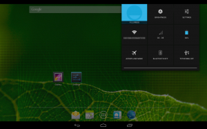
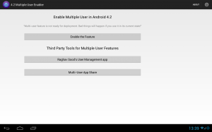
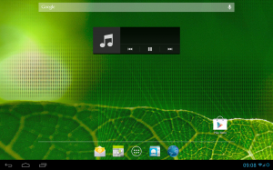

Meine Spielerin #2 und ich besitzen und benutzen zusammen ein Motorola Xoom*. Weil ich ein großer Fan von Custom-ROMs, insbesondere des Cyanogenmods bin, läuft dort natürlich auch CM drauf, natürlich die neuste Version CM10.1, die es für das Xoom bisher nur als Nightlies gibt. Leider ist bei unserer Version mit 3G (der Modellname ist Everest) im Default der Multiusermodus, der für Android 4.2 angekündigt wurde, wegen irgendwelchen Problemen deaktiviert worden. Da mich aber sowohl die Benachrichtigungen als auch die Apps meiner Geliebten wenig interessieren, will ich diesen unbedingt haben. Eventuelle kleinere Probleme nehme ich dafür in Kauf. Außerdem gefällt es mir auch nicht, dass das Cyanogenmodteam dem Xoom eine "Phablet"-Ui verpasst hat. Die sieht im Standard so aus:

Eine obere Notificationbar auf einem Tablet? Halte ich für sinnfrei, will ich nicht. Hier also meine Vorgehensweise. Ich empfehle, euch genaustens an die Schritte und die Reihenfolge zu halten, da es sonst Probleme geben könnte, vor allem bei der Multiuserunterstützung. Diese Vorgehensweise dürfte in begrenztem Maße auch für die meisten anderen Tablets und Smartphones funktionieren. Nach meiner Erfahrung sind ROMs ohne integrierte Google Apps empfehlenswert.
- Das gewünschte ROM herunterladen und flashen. Die neusten CM10.1 ROMs für das Xoom Everest findet ihr hier. Für andere Xoom Versionen, schaut in den Thread auf XDA-Developers. Je nachdem welches ROM vorher installiert war, ist ein Wipe des Caches und des Dalvik Caches ausreichend, ansonsten ist ein Full Wipe notwendig.
- Android booten, die App "4.2 Multiple User Enabler" runterladen und installieren.
Der XDA-Developers Thread dazu befindet sich 4.2 Multiple User Enabler
- Nachdem ihr die App installiert habt, führt sie aus, "Enable the feature" und bestätigt die Superuser-Berechtigungen.

- Rebootet anschließend ins Recovery, wipet Dalvik-Cache und Cache.
- Dann wieder ins Android-System zurück. Legt nun alle Benutzer an, die ihr auf eurem Tablet haben wollt. Versucht auch direkt, euch mit diesen einzuloggen. Wenn dabei ein unzähmbarer Haufen an Absturzberichten kommt, funktioniert meine Methode für euch eventuell nicht oder ihr habt die Reihenfolge nicht eingehalten. Bei meinem Xoom funktionierte aber alles.
- Wechselt nun wieder in das Recovery und flasht eure Google Apps.
- Startet das Tablet anschließend wieder in das System und checkt, ob ihr euch mit allen Benutzern an eurem Google Konto anmelden könnt (wenn gewünscht).
- Nun kommen wir zur TabletUi. Dafür benötigen wir den Autopatcher.
Ich empfehle die Nutzung der neusten Version von github, da ich bei den älteren Versionen Probleme mit dem Patchen hatte.
- Patcht euer Rom mit dem tabletUI-Mod. Wie ihr das macht, hängt von eurem Betriebssystem ab, ist aber im Autopatcher-Thread ausreichend erklärt.
Wenn ihr schon dabei seid, würde ich zusätzlich noch den Openpdroid-Mod empfehlen, der es einem per Zusatzapp ermöglicht, anderen Apps Rechte zu verwehren. So oder so erhaltet ihr am Ende zwei Dateien, eine update-* und eine restore-*.
- Kopiert beide Dateien auf euer Tablet und flasht die update-* via Recovery. Macht anschließend wieder ein Wipe von Cache und Dalvik-Cache.
- Startet ins System und prüft bei allen Benutzern, ob alles erwartungsgemäß funktioniert.
Fertig! Ihr habt nun (hoffentlich) ein System mit Multiuser-Unterstützung und einer vernünftigen UI für ein Tablet.

Falls ihr doch Probleme habt, fragt hier oder je nach Schritt besser in dem jeweiligen XDA-Developers Thread.
{kind=link}
{kind=link}
{kind=link}